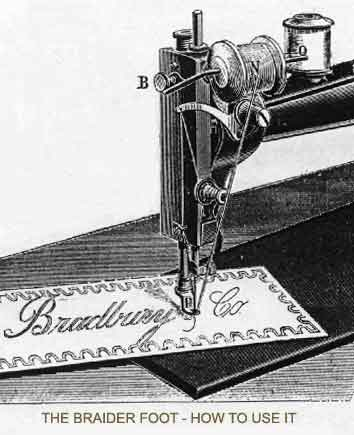
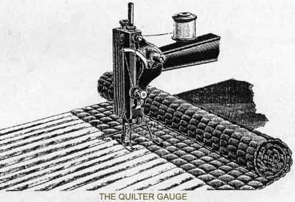

VIBRATORS can be supplied to either the No. 2 or No. 4
Rotary Machines AT AN EXTRA COST OF TEN SHILLINGS
********************************
All the parts of the Rotary Machine are pinned securely together, thus making the adjustment absolutely permanent, and the Machine capable of being run at a higher rate of speed than any other Machine without getting out of order.
Slip the belt off the driving-wheel, turn the Machine back on its hinges, and oil all the working parts. Then raise the plate at the bottom of the peg A (in illustration E) and oil the pitman.
Then bring back the Machine to its proper position and replace the belt. Oil the three holes on the top of the arm, fly-wheel, winder,take-up lever, top end of needle bar; when the shuttle cover is withdrawn a few drops in the sponge near the shuttle.
After oiling, run the Machine a few minutes, then wipe off all surplus oil, so as not to soil the thread or material being sewn.
NOTE -- If the Machine is in constant use it requires to be well oiled twice a day in all the places enumerated above, and also on the following places:-- each side of the treadle where it rests on the traverse bar, both ends of the wooden pitman, one hole in stand side.
The Machine should be kept properly oiled. We have a good quality of oil, manufactured especially for our trade, and put up by ourselves, with our name blown in the bottle, which should invariably be used. A poor quality of oil will "gum up" the machine and make it run heavy.
Operators should by all means use this oil, warranted not to gum up the Machines, and it does not stain the work or fingers. All our Depots and Agents keep it. Very clear and without smell. Price 2d., 4d., 5d., and 6d per bottle.
Fix either end of the hemmer as may be desired on the table by the thumbscrew B, adjust it to its proper position so that the needle strikes on the edge of the hem, as shown by the dotted lines.
Having thus fixed it for use, take the material in hand, place it in at the front of the hemmer the part to be hemmed, taking care to fill the cone with the material, so that in its passage through to the needle the hem becomes folded, and thus stitched.
Be particular to have the needle to the highest point, and then draw about four inches of slack thread from the top spool; then draw the goods to the left and cut the thread close to the cloth; by doing so the shuttle thread will remain up through the throat plate. BE CAREFUL NOT TO BEND OR SPRING THE NEEDLE.

Braiding is the act of stitching braid on a piece of cloth in any desired form or pattern, as indicated by the illustration above.
B is the thumbscrew for holding the braid holder O. N is an ordinary reel upon which the braid must be wound. P is the braiding foot which must be put on in place of the ordinary sewing foot.
In commencing, pass the end of the braid through the hole at the front of the foot, leaving a short length of braid to commence with so that the feed can take hold of it, have the Machine threaded up and properly tensioned, put the Machine in motion and guide the material according to the pattern already marked out; when turning square corners, have the needle halfway down.

Move the quilter gauge E out from the needle for a wide space and in for a narrow space; after moving it tighten it with the screw behind F in the presser-bar. Very large pieces of quilting should be quilted on the Machine in sections. The quilter is not used except for spacing straight lines of stitching.
|
1 Straight Guide 1 Screw for Straight Guide 1 Braider Foot 1 Extra Winder Ring
|
1 Braider Arm 1 Double Hemmer 12 Needles (assorted) 1 Bottle of Oil |
1 Oil Can 1 Screw Driver 4 Shuttle Reels 1 Book of Instructions |
N.B. -- We do not supply a double hemmer, braider-foot, or a quilting guide with the No. 4 Rotary Machines
Take off the ordinary sewing foot and put on the one with the surface reduced at the bottom. Place the material right side upwards and begin to sew as for ordinary sewing. If more fulness is required it can be obtained by making a large stitch and tightening the tension.
By putting a strong cotton on the top, a great amount of tension can be had, which will add more fulness to the frilling.
IF THE FRILLING REQUIRES TO BE PUFFED it can be done so by pressing the material with the finger underneath upwards.
The above Binder is for the purpose of binding the edges of any material, such as Rugs, Stays, Trousers, Coats, Vests, Mantles, &c. The work is more durable, besides having a neater and more finished appearance than when done by hand, and the saving of time it effects is considerable.
The Guide is fastened on the plate, having vertical pegs in it, between which the tape is passed to give the necessary tension.
The internal block swivels on a pin, so that it can be adjusted slightly to the varying width of tape. To do perfect binding the tape and thickness of material to be bound is required to be sent to us.
Persons not accustomed to use a Sewing Machine should draw the thread from the eye of the needle, and then work the Machines with the presser-foot raised until they become accustomed to its movements. If the Machine will not "feed" or carry the material along, it is because the stitch is too short.
If the cloth draws down through the hole in the cloth plate, the needle is blunt or too large, or the stitch is too short, or there is not enough tension to draw up the slack thread.
The Machine will skip stitches if the needle is bent, or set up too high or too low.
If the thread breaks, it is not of good quality, or may be too fine or too coarse for the needle; it may also break if the tension is too tight.
Sometimes the needle passes so close to the edge of the presser-foot that the square edge of the presser-foot cuts the thread off, and when such is the case it is because the presser-foot is not properly adjusted, or the needle is crooked.
Be particular to have the proper pressure on the cloth, which is regulated by turning nut 7 (see illustration A) down to make a heavy pressure and up to make it light; too much pressure on fine cloth will pucker it, and not enough pressure on heavy or hard cloth will cause the presser-foot to raise up as the needle is withdrawn from it.
Care and judgement should be exercised in adjusting the presser-foot and attachments to the presser-foot bar, for they may be so adjusted that the needle will pass so close to the edge of the slot as to cut the thread.
TO TIGHTEN THE BELT -- If the belt turns without driving the machine, or does not force the needle through hard goods, it has become too loose and needs tightening, which can be done by cutting off a small piece and readjusting the ends.
************************************
The Rotary Shuttle Machine has taken the First Prize at every Exhibition at which it has been shown; Gold Medals at Adelaide and Perth (W. Australia) Exhibitions 1881; Ten First Prizes during 1882; Gold Medal, Huddersfield 1883; Gold Medal, Inventions Exhibition, 1885; and Highest Award, Liverpool 1886